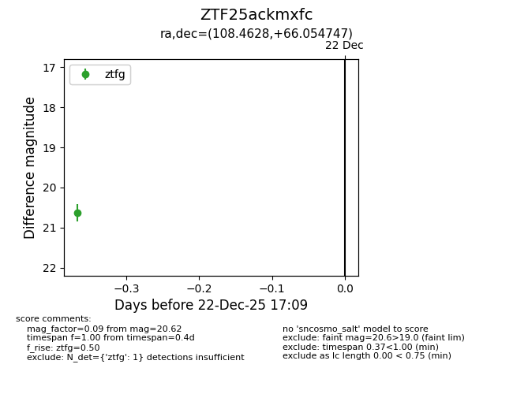
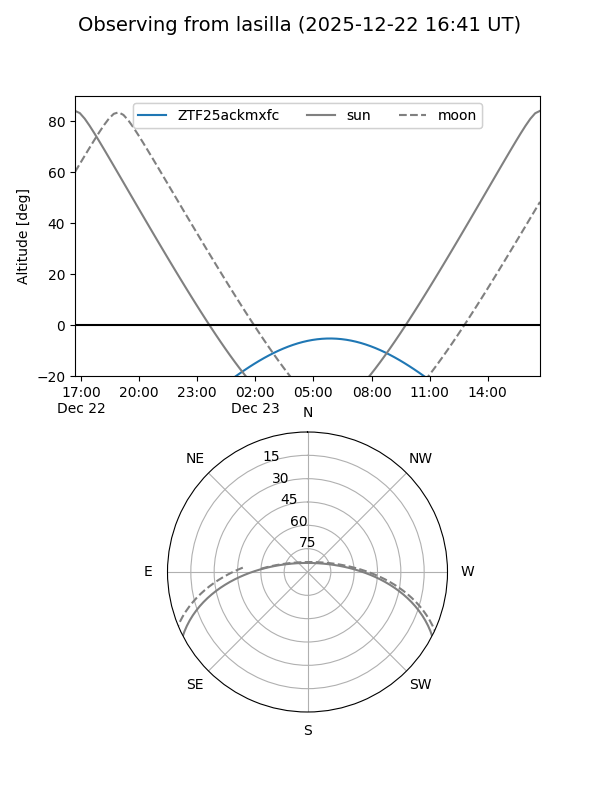
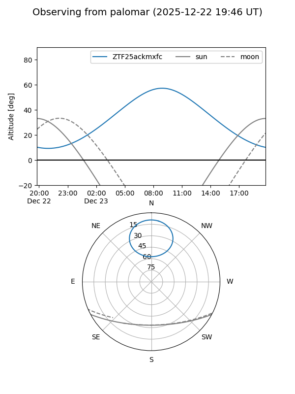

ZTF25ackmxfc
Target ZTF25ackmxfc at 2025-12-22 17:11
Aliases and brokers:
FINK: fink-portal.org/ZTF25ackmxfc
Lasair: lasair-ztf.lsst.ac.uk/objects/ZTF25ackmxfc
ALeRCE: alerce.online/object/ZTF25ackmxfc
alt names
ZTF25ackmxfc (ztf,fink_ztf)
Coordinates:
equatorial (ra, dec) = 108.4628,+66.05475
equatorial (HMS+DMS) = 07:13:51.08,+66:03:17.09
galactic (l, b) = (149.8569,+26.87261)
Flags:
Photometry:
last ztfg=20.62
1 ztfg detections
Lightcurve

Visibility


Additional plots